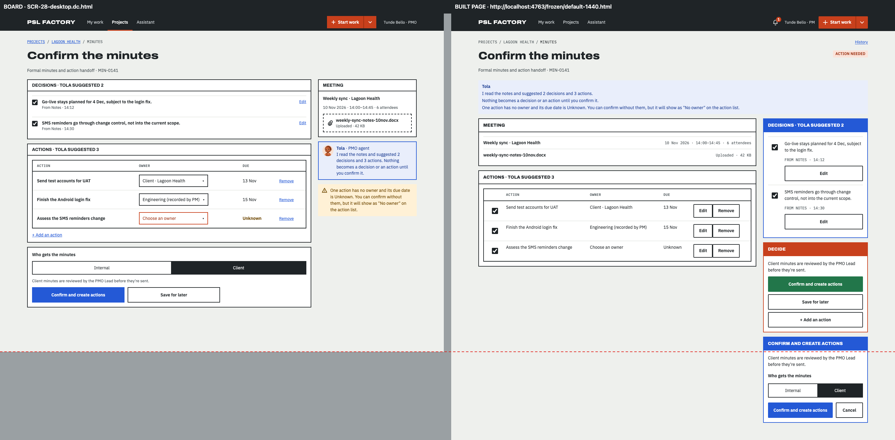
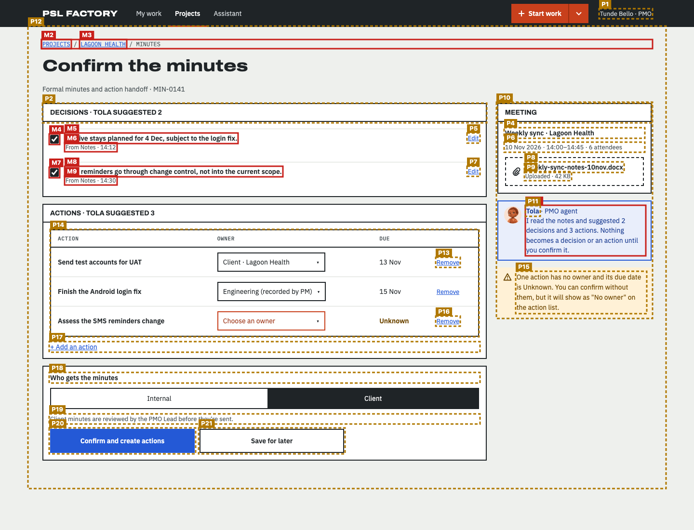
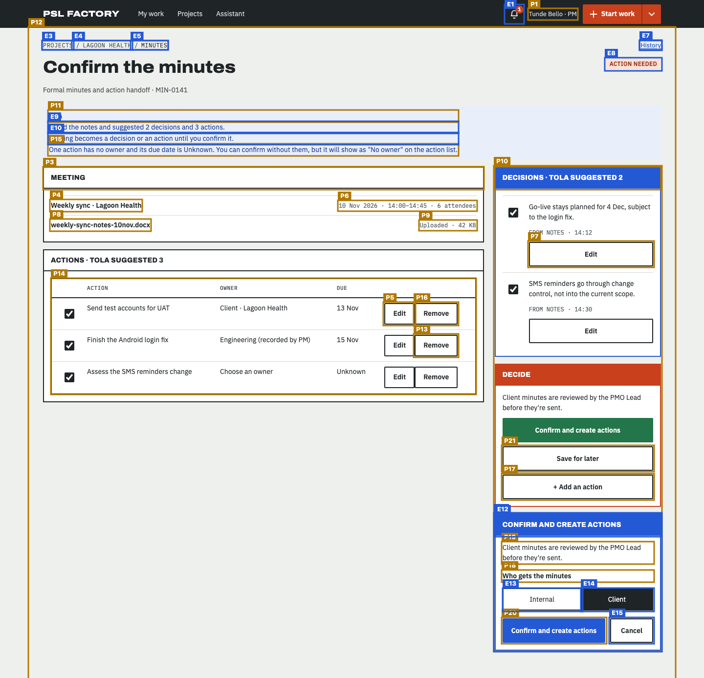
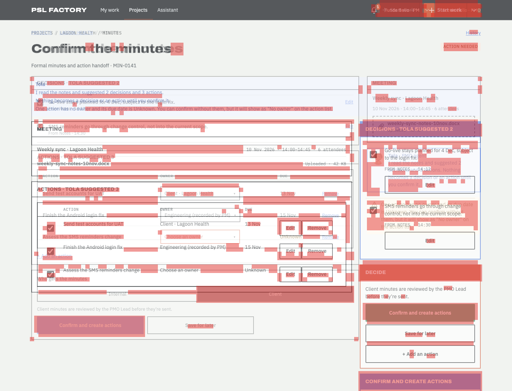

Does the built page follow the design?
Board SCR-28-desktop.dc.html compared with http://localhost:4763/frozen/default-1440.html at 1440px wide · 2026-11-16T17:42:24.615Z
- Every board item is on the page or approved as an exception (100%).
- Visual match 69.2 is below 90.
- 21 item(s) are in a different place; review them (not part of the pass rule unless --strict-position).
35 of 45 things drawn on the board were found on the page: headings, buttons, links, search and filter controls, table columns, labels and the repeated rows (counted once, not per row).
How closely the shapes line up: blocks, bars, tables and text areas, compared in 12px squares over the top 1100px. Different words in the same place still count as a match, so sample data does not lower the score.
Missing from the built page 10
Drawn on the board but not found on the page. Each one must be built, or approved as an exception.
| # | What | Text on the board | Where on the board | Exception |
|---|---|---|---|---|
| M1 | Text | PROJECTS / LAGOON HEALTH / MINUTES | middle, 84px down | approved Conflicts 11: The project crumb links and tab bar with counts belong to the frame; counts are a missing field (D-83). · builder proposal, pending design engineer |
| M2 | Link | PROJECTS | left, 84px down | approved Conflicts 11: The project crumb links and tab bar with counts belong to the frame; counts are a missing field (D-83). · builder proposal, pending design engineer |
| M3 | Link | LAGOON HEALTH | left, 84px down | approved Conflicts 11: The project crumb links and tab bar with counts belong to the frame; counts are a missing field (D-83). · builder proposal, pending design engineer |
| M4 | Checkbox | Keep this decision | left, 280px down | approved Conflicts 1: The frame draws its own accessible name "Select <text>" on each ticked box; the board's "Keep this decision" has no field. · design engineer, 16 Nov 2026 — D-98 |
| M5 | Text | Go-live stays planned for 4 Dec, subject to the login fix. | left, 278px down | approved Conflicts 6: the words are on the page. The fidelity tool does not read text inside a list row, so it reports them missing; what differs is placement (the frame draws suggestions in its side column, not the board's main column) and style. · builder proposal, pending design engineer |
| M6 | Text | From Notes · 14:12 | left, 298px down | approved Conflicts 6: the words are on the page. The fidelity tool does not read text inside a list row, so it reports them missing; what differs is placement (the frame draws suggestions in its side column, not the board's main column) and style. · builder proposal, pending design engineer |
| M7 | Checkbox | Keep this decision | left, 349px down | approved Conflicts 1: The frame draws its own accessible name "Select <text>" on each ticked box; the board's "Keep this decision" has no field. · design engineer, 16 Nov 2026 — D-98 |
| M8 | Text | SMS reminders go through change control, not into the current scope. | left, 347px down | approved Conflicts 6: the words are on the page. The fidelity tool does not read text inside a list row, so it reports them missing; what differs is placement (the frame draws suggestions in its side column, not the board's main column) and style. · builder proposal, pending design engineer |
| M9 | Text | From Notes · 14:30 | left, 367px down | approved Conflicts 6: the words are on the page. The fidelity tool does not read text inside a list row, so it reports them missing; what differs is placement (the frame draws suggestions in its side column, not the board's main column) and style. · builder proposal, pending design engineer |
| M10 | Text | Tola · PMO agent I read the notes and suggested 2 decisions and 3 actions. Nothing becomes a decision or an action until you confirm it. | right, 428px down | approved Conflicts 8/9: Agent status tag and "Started/Drafted" line: the status words are frame words and the times are in the checklist note. · builder proposal, pending design engineer |
In a different place 21
Found on both, but in a different order, side of the page, or area (for example inside the table frame instead of above it).
| # | What | How it moved |
|---|---|---|
| P1 | Text Tunde Bello · PMO |
|
| P2 | Text DECISIONS · TOLA SUGGESTED 2 |
|
| P3 | Text MEETING |
|
| P4 | Text Weekly sync · Lagoon Health |
|
| P5 | Link Edit |
|
| P6 | Text 10 Nov 2026 · 14:00–14:45 · 6 attendees |
|
| P7 | Link Edit |
|
| P8 | Text weekly-sync-notes-10nov.docx |
|
| P9 | Text Uploaded · 42 KB |
|
| P10 | Side panel |
|
| P11 | Text Tola |
|
| P12 | Main area |
|
| P13 | Link Remove |
|
| P14 | Table |
|
| P15 | Text One action has no owner and its due date is Unknown. You can confirm without them, but it will show as "No owner" on the action list. |
|
| P16 | Link Remove |
|
| P17 | Link + Add an action |
|
| P18 | Text Who gets the minutes |
|
| P19 | Text Client minutes are reviewed by the PMO Lead before they're sent. |
|
| P20 | Link Confirm and create actions |
|
| P21 | Link Save for later |
|
Looks different 18
Found on both, but styled differently: table rows and cells, fonts, colours, underlines, outlines, corners. Not part of the score; check each one against the board.
| What | Difference |
|---|---|
| Link "Projects" |
|
| Link "Start work" |
|
| Link "More ways to start" |
|
| Text "DECISIONS · TOLA SUGGESTED 2" |
|
| Link "Edit" |
|
| Link "Edit" |
|
| Text "ACTIONS · TOLA SUGGESTED 3" |
|
| Link "Remove" |
|
| Link "Remove" |
|
| Link "Remove" |
|
| Link "+ Add an action" |
|
| Text "Client minutes are reviewed by the PMO Lead before they're sent." |
|
| Link "Confirm and create actions" |
|
| Link "Save for later" |
|
| Text "MEETING" |
|
| Text "10 Nov 2026 · 14:00–14:45 · 6 attendees" |
|
| Text "Uploaded · 42 KB" |
|
| Text "One action has no owner and its due date is Unknown. You can confirm without them, but it will show as "No owner" on the action list." |
|
On the page but not on the board 15
Built but not drawn. Some are expected (data, status lines); the rest need the design engineer to approve or remove them.
| # | What | Text on the page | Where on the page |
|---|---|---|---|
| E1 | Button | Alerts, 1 unread | right, 11px down |
| E2 | Navigation area | Where this sits | left, 85px down |
| E3 | Text | PROJECTS | left, 85px down |
| E4 | Text | LAGOON HEALTH | left, 85px down |
| E5 | Text | MINUTES | left, 85px down |
| E6 | Navigation area | Work item | right, 85px down |
| E7 | Link | History | right, 84px down |
| E8 | Text | ACTION NEEDED | right, 120px down |
| E9 | Text | I read the notes and suggested 2 decisions and 3 actions. | left, 250px down |
| E10 | Text | Nothing becomes a decision or an action until you confirm it. | left, 273px down |
| E11 | Form | Confirm and create actions | right, 1051px down |
| E12 | Heading | CONFIRM AND CREATE ACTIONS | right, 1053px down |
| E13 | Option | Internal | right, 1205px down |
| E14 | Option | Client | right, 1205px down |
| E15 | Button | Cancel | right, 1265px down |
Pictures
The red dashed line on the side-by-side marks how far down the visual score looks. On the marked board, red boxes are missing items (M). On the marked page, amber boxes moved (P) and blue boxes are extra (E). In the difference picture both screens are laid over each other and red squares are where the shapes do not line up.






Notes about this run
- Images: /_blob/ images are served from /Users/Hunchoo/psl-factory/design/mascots/canvas-assets.json (19 mapped).
Found on both (35)
| Navigation area | Main | |
| Text | PSL FACTORY | |
| Link | My work | |
| Link | Projects | |
| Link | Assistant | |
| Link | Start work | |
| Link | More ways to start | |
| Text | Tunde Bello · PMO | page: Tunde Bello · PM |
| Main area | ||
| Heading | Confirm the minutes | |
| Text | Formal minutes and action handoff · MIN-0141 | |
| Text | DECISIONS · TOLA SUGGESTED 2 | |
| Link | Edit | |
| Link | Edit | |
| Text | ACTIONS · TOLA SUGGESTED 3 | |
| Table | ||
| Table column | ACTION | |
| Table column | OWNER | |
| Table column | DUE | |
| Link | Remove | |
| Link | Remove | |
| Link | Remove | |
| Link | + Add an action | |
| Text | Who gets the minutes | |
| Text | Client minutes are reviewed by the PMO Lead before they're sent. | |
| Link | Confirm and create actions | |
| Link | Save for later | |
| Side panel | page: Review and decide | |
| Text | MEETING | |
| Text | Weekly sync · Lagoon Health | |
| Text | 10 Nov 2026 · 14:00–14:45 · 6 attendees | |
| Text | weekly-sync-notes-10nov.docx | |
| Text | Uploaded · 42 KB | |
| Text | Tola | |
| Text | One action has no owner and its due date is Unknown. You can confirm without them, but it will show as "No owner" on the action list. |
How the scores are worked out
Element coverage. The board is drawn locally from its own template and sample data. From the drawn board the check lists everything a person sees or uses: page areas (navigation, main, search), headings, links, buttons, form fields with their labels, table column headers, filter, search and pagination controls and fixed labels. Rows drawn from sample data count once, as a pattern ("table rows with these columns"). Each item is looked for on the page by its kind and its words (ignoring capitals, curly quotes and small wording differences, at least 80% similar). Coverage is found ÷ drawn. Order is compared in reading order (top to bottom, left to right); an item is "moved" when it breaks the order, sits on the other side of the page, or sits inside a different area.
Visual match. Both full-page screenshots are compared in 12px squares after a light blur, over the board's height (1100px; the page is 1387px). Only squares with something in them count. A square matches when its colours line up, or when both have text or lines there. Score = matching ÷ counted squares (5013 of 7244). Over every square including empty background it would be 79.8.
Technical details
Board file: /Users/Hunchoo/psl-factory/design/canvas/project/SCR-28-desktop.dc.html
Viewport: 1440×1100
Report data: report.json
Exceptions file: /Users/Hunchoo/psl-factory/delivery/features/F-23/fidelity-exceptions.json